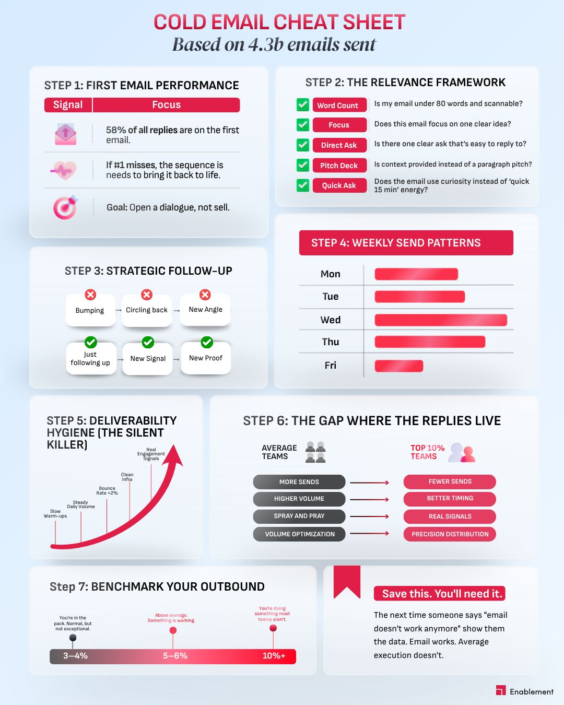
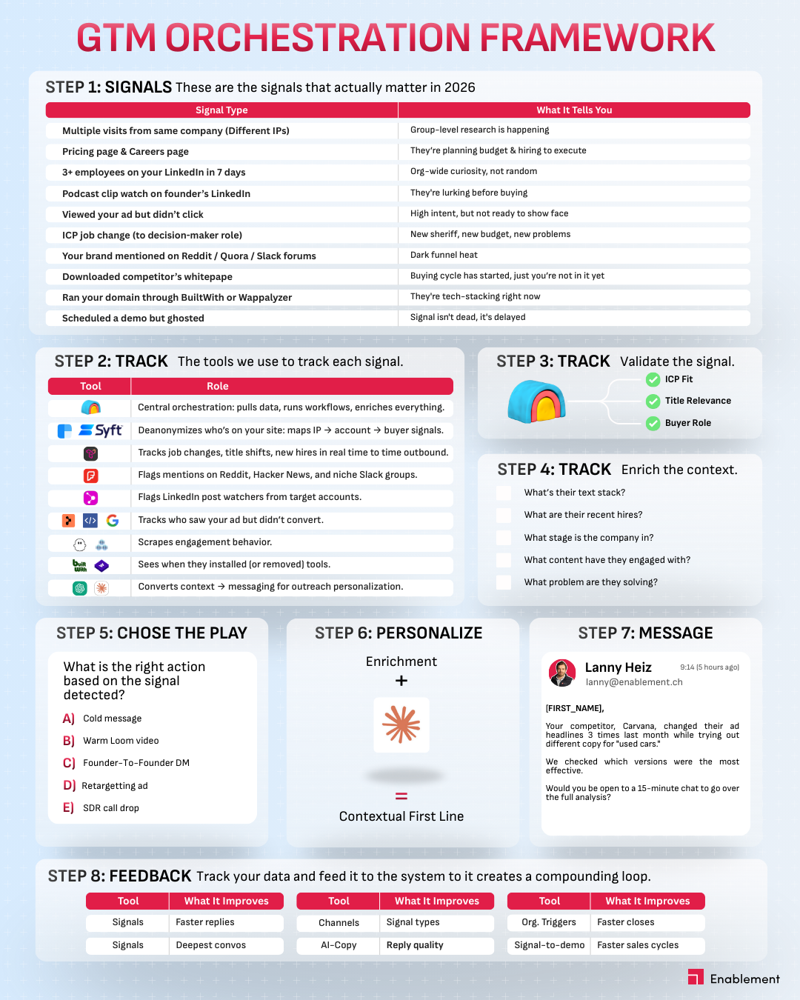

08 / Reference gallery
The calibration set. Look hard.
Every rule above traces back to one of these three references. Read them with the annotations in social-examples/inspiration/README.md for what works, what could be improved, and what each one teaches.

